Elijah vs. Jezebel · prueba de modelo · 24/11/2026
MAGI-2 contra Cinema Studio
Seis momentos de la serie, uno de cada capítulo, rehechos con MAGI-2 (Sand.ai, dentro de Higgsfield) con las mismas hojas de elenco y cuadros reales de la serie como referencia. A diferencia de cómo trabajamos con Cinema Studio, cada toma junta varios planos de una escena en una sola generación de 20 a 30 segundos. Cada toma tiene al lado la versión que ya está en la app, mis notas, la segunda mirada de un revisor independiente y las mediciones de sonido y diálogo. Son tomas crudas, tal como salieron: no están recortadas ni mezcladas.
Lo que sale de la prueba
- Respeta el guion al segundo. Los 21 cortes de las seis tomas cayeron a menos de 0,4 s del segundo pedido, y las 13 frases salieron completas, en orden y cada una en su plano. Con Cinema Studio el modelo respeta el contenido pero no los tiempos (B4).
- Una escena entera en una sola generación mantiene el decorado. En la viña y en la ventana, cada ángulo vuelve con el mismo fondo, la misma luz y la misma gente. Con Cinema Studio eso obligaba a encadenar tomas desde el último cuadro (B29), y aun así fallaba.
- Las caras son las de la serie si se le da la hoja de Soul Cast y un cuadro real del capítulo. Ese cuadro también fija el encuadre: el plano sale con la posición de cámara del cuadro.
- El defecto que se repite: la mirada a la lente. En 5 de las 6 tomas, quien habla en un primer plano de frente mira al lente aunque el prompt lo prohíba (Elijah, Jezebel, Jehu, el anciano). En los planos por encima del hombro del otro (la viña), la mirada se lee dirigida al otro personaje. Cuando el cuadro de referencia mira al lente, el plano también.
- Efectos: el fuego es espectacular (el Carmelo, el carro), mucho más que en la serie. Lo físico se ve hecho por computadora: rocas que flotan, una montaña con forma de huevo, caballos que despegan como un cohete. Y todavía hay cosas que cambian dentro de una toma: el altar, el bastón, un sirviente que salta de un lado al otro.
- Costo: 2,5 créditos por segundo en 1080p nativo. Las seis tomas (160 s) costaron 400 créditos; con Cinema Studio en 1080p serían 2.560. Un capítulo de 3 minutos saldría unos 450 créditos sin repeticiones, menos que la ruta de 480p más ampliación, y sin las caras deformadas de la ampliación (C9). No hay versión de borrador en 480p.
- Sonido: no agrega música. Sale entre 1 y 16 dB más fuerte que Cinema Studio y a 25 cuadros por segundo (la serie va a 24): hay que emparejarlo en el armado. En un plano sin diálogo puede dejar silencio digital (la viña, de 19 a 22,4 s): hay que reponer el ambiente (B23). El tono de Elijah queda en el mismo rango (94 a 113 Hz, contra 95 a 116 en la serie); el timbre de cada personaje hay que escucharlo. Los nombres (Jehu, Naboth, Baal) salieron bien dichos.
- Límites prácticos: el plan permite 2 tomas de MAGI-2 a la vez, y cada una tarda de 11 a 17 minutos. No acepta imagen inicial junto con referencias, así que no se puede arrancar una toma desde el último cuadro de otra con el elenco puesto.
- Qué probaría después: rehacer las conversaciones (el salón y la ventana) con todos los primeros planos por encima del hombro del otro y cuadros de referencia que no miren al lente. Si así se arreglan las miradas, filmar media parte de un capítulo con MAGI-2 y compararla armada.
Las tomas
| Cap. | Escena | Qué prueba | Duración | Planos | Frases | Veredicto | |
|---|---|---|---|---|---|---|---|
| M01 | 5 | El carro de fuego | Efectos · Diálogo · 3 planos | 30,2 s | 3 / 3 | 2 / 2 | Sirve recortada |
| M02 | 1 | El juramento en el salón del trono | Conversación · 3 personajes · 4 planos | 25,0 s | 4 / 4 | 3 / 3 | Rehacer planos 2 a 4 |
| M03 | 2 | Fuego del cielo en el Carmelo | Efectos · Multitud · 4 planos | 20,2 s | 4 / 4 | 1 / 1 | Fuego mejor que la serie |
| M04 | 3 | Viento, terremoto y fuego en el Horeb | Efectos · Transiciones · 4 planos | 25,0 s | 4 / 4 | 1 / 1 | Peor que la serie |
| M05 | 4 | Elijah y Ahab en la viña | Conversación · 2 ángulos · 5 planos | 30,2 s | 5 / 5 | 3 / 3 | La mejor conversación, con 1 plano a rehacer |
| M06 | 6 | Jezebel en la ventana | Conversación · A distancia · 5 planos | 30,2 s | 5 / 5 | 3 / 3 | Lo mejor, con 2 planos a rehacer |
M01 El carro de fuego
La secuencia del final del capítulo 5 (T20, T21, T22a y T22b de la serie) en una sola toma: los dos caminan, baja el carro de fuego, los separa, Elijah sube, el carro se va al cielo y Elisha grita.
- Duración
- 30,2 s · 1080x1920 · 25 cuadros/s
- Costo
- 75,0 créditos (Cinema Studio 1080p: 480)
- Generación
- 15 min
- Planos
- 3 pedidos · 3 obtenidos (cortes en 6,7 s, 21,8 s)
- Volumen
- -15,4 LUFS (serie: -20,2)
Bien
- Hizo los tres planos con los cortes casi en el segundo pedido (6,7 y 21,8 s, pedidos a los 7 y 22) y cada acción en su tramo.
- Las dos frases completas y en su momento: «If you see me taken…» a los 1,9 s y el grito de Elisha a los 23 s.
- Elisha es el de la serie. Elijah también, de perfil y de tres cuartos.
- El carro y los caballos no se transforman: mantienen forma y tamaño desde que tocan tierra hasta que salen de cuadro.
- La misma llanura, el mismo cielo y la misma luz en los tres planos.
Mal
- 0 a 1,5 s: Elijah mira a cámara y de frente tiene otra cara (más lisa y redonda). Se corta: la frase empieza a los 1,88 s.
- El despegue (19 a 21,5 s) parece un cohete: caballos rígidos con las patas colgando y dos columnas paralelas de humo negro. Al bajar tampoco galopan.
- El cielo tiene una textura de pared revocada y una mancha negra que queda quieta de 11 a 19 s.
- En el segundo corte, Elisha baja el brazo y lo vuelve a levantar (acción repetida).
- Elijah sube al carro por adelante, entre los caballos, y no mira a Elisha cuando le habla.
Segunda mirada
- Coincide en la mirada a cámara de 0 a 1,5 s y agrega que de frente la cara cambia dentro del mismo plano.
- Marca como lo más «IA» el despegue tipo cohete; es lo único que rehace si se quiere el plano creíble.
- Detalles leves: un tinte malva en el humo (venía en la referencia del carro) y manchas como de leopardo en el borde del manto en el primer segundo.
Diálogo
| Guion | MAGI-2 | Tono | Serie | Tono |
|---|---|---|---|---|
| If you see me taken, it is yours. | 1,9 s – 5,1 s If you see me taken, it is yours. | 101 Hz | 0,0 s – 4,1 s You ask a hard thing. If you see me taken, it is yours. · 75 % | 95 Hz |
| My father! My father! The chariots of Israel, and its horsemen! | 23,0 s – 27,9 s My father! My father! The chariots of Israel and its horsemen! | 372 Hz | 20,4 s – 26,4 s My father! My father! The chariots of Israel and its horsemen! | 356 Hz |
Además se transcribió:
- 30,0 s – 30,1 s: «Thank you.»
Ver por separado: solo MAGI-2 y solo la serie, cada una con su sonido
Hoja de control: dos cuadros por segundo
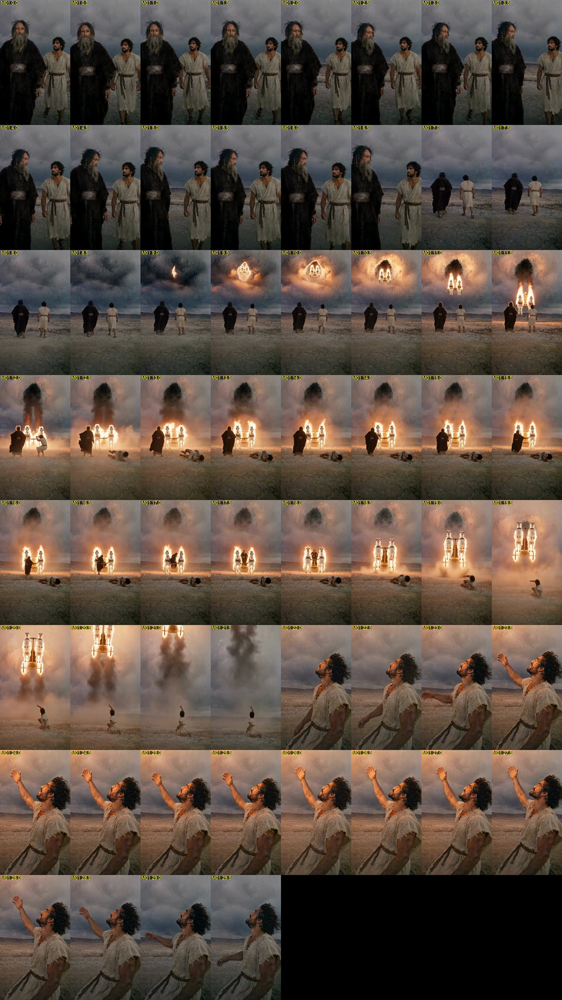
Referencias y prompt
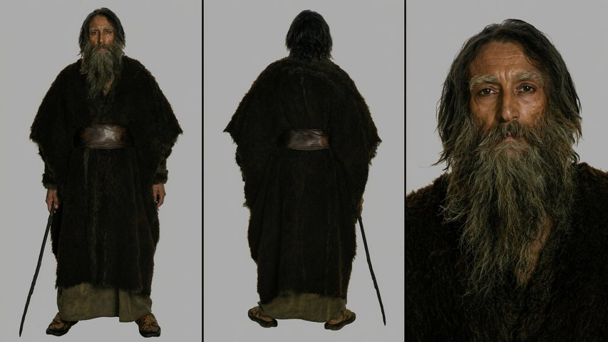
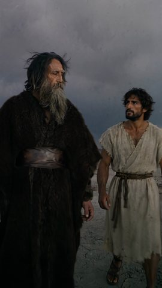
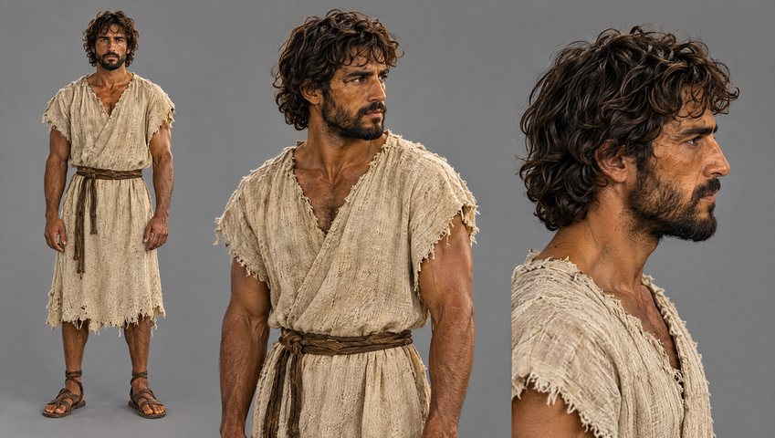
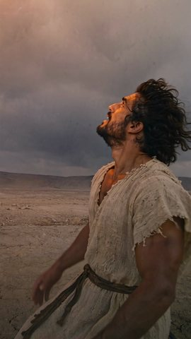
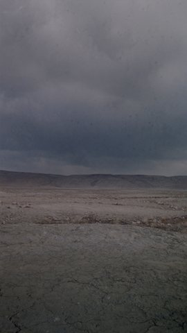
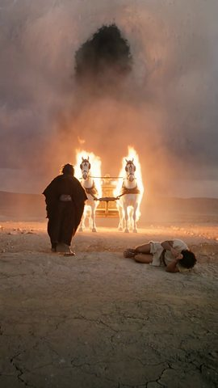
References: @image1 (the first reference image) is Elijah, the old prophet: his face, his long dark grey-streaked hair, his long beard and the heavy dark-brown fur mantle with the wide leather belt; ignore the staff in @image1, he carries no staff. @image2 is a real frame of this film: Elijah at the left and Elisha at the right, exactly as they must look. @image3 is Elisha, his young follower: about 25, dark curly hair, a short dark beard, an undyed linen knee-length tunic with a rope belt. @image4 is a real frame of this film: Elisha's face and tunic in the orange light of the fire. @image5 is the place: a barren plain east of the Jordan River under heavy clouds. @image6 shows only how the chariot of fire and its two horses of fire look in this film: a small golden chariot with two wheels and two pale horses wrapped in real flames. 9:16 vertical, biblical epic, ancient Israel, 9th century BC. Naturalistic film look, natural light only, low contrast, anamorphic lens, photorealistic, desaturated ochre earth tones, soft film grain. No glow effects, no oversaturated colors, no posing. Nobody ever looks into the camera. No purple anywhere. Just before dusk under low heavy dark grey clouds, dim cool light, strong wind. Wardrobe: Elijah wears his heavy dark-brown fur mantle with the wide leather belt, exactly as in @image1 and @image2, and his hands are empty. Elisha wears only his undyed linen knee-length tunic with the rope belt and sandals, exactly as in @image3: no mantle, no cloak, no trousers. Geography, the same in every shot: the two men are alone on the open plain of @image5. Around them there is only flat pale cracked earth, bare hills on the horizon and the heavy clouds: no river, no building, no tree, no road and no other person anywhere. Elijah is always at the LEFT and Elisha always at the RIGHT. Three shots joined by two hard cuts, 30 seconds in total. Shot 1 (0-7s), medium two-shot from the front: the two men walk side by side toward the camera across the plain, Elijah at the left, Elisha at the right, and the camera moves slowly backward in front of them, keeping the same distance. The wind moves Elijah's hair, his beard and the fur of his mantle, and Elisha's tunic. First beat (0-2s): they walk; nobody speaks. Second beat (2-6s): without stopping, Elijah turns his head toward Elisha and speaks to him, gravely, looking at his face; we clearly see his lips move with every word. Elisha looks back at him and does not speak. Third beat (6-7s): they keep walking in silence. Hard cut. Shot 2 (7-22s), one continuous wide shot from low behind the two men; we see them only from behind and never see their faces. They walk away from us across the open plain, a few steps apart: Elijah at the left in the dark fur mantle, Elisha at the right in the pale linen tunic. First beat (7-9s): the wind rises, dust races across the ground, and the dark clouds ahead of them begin to turn. Second beat (9-12s): the clouds ahead tear open and the chariot of fire of @image6, drawn by its two horses of fire, comes galloping down out of the sky toward them. It is real fire, not light: the horses' bodies, manes and legs are wrapped in roaring orange and white flames, the chariot and its two wheels are burning, and it trails sparks and black smoke. Third beat (12-15s): the chariot and the horses thunder down onto the plain exactly between the two men and drive them apart: the blast of wind and heat throws Elisha to the ground at the right, his arm over his face; Elijah stays on his feet at the left, upright, facing the fire, his mantle whipping in the wind. The fire lights the dust and the ground orange. Fourth beat (15-18s): Elijah walks to the side of the chariot, grips its rail and climbs up into it; he stands upright in it behind the two horses, small and dark among the flames, which do not burn him. Fifth beat (18-22s): the two horses of fire rear and leap forward and climb into the air as if they ran up an invisible ramp, pulling the burning chariot with Elijah standing in it, and a whirlwind of dust and sparks rises around them; the camera tilts up to follow them as they climb higher and higher and vanish into the clouds. The horses always move forward, head first: nothing moves backward and nothing floats straight up. While they rise, Elisha, at the right, pushes himself up from the ground onto his knees and lifts his face and one arm toward the sky. The chariot, the horses and the two men keep the same shape and the same size relative to each other for the whole shot: nothing transforms and nothing new appears. Hard cut. Shot 3 (22-30s), close shot from a low angle, slightly to Elisha's side: Elisha alone, on his knees in the dust of the same plain, seen from the chest up against the dark clouds. He looks up at the sky high above and to the left of the camera, never into the lens. The wind whips his hair and his tunic, dust flies past him, and a flickering orange light of fire from high above falls on his face. First beat (22-23s): he stares up, stunned. Second beat (23-28s): he cries out to the sky with all his voice, one hand reaching up; we clearly see his lips move with every word. Third beat (28-30s): the orange light fades from his face and leaves only the grey light; his hand sinks; he keeps staring up. People must behave like real people: natural, unhurried movements, no posing. Dialogue and sound, in American English (natural US accent). In shot 1, Elijah, a deep, steady, grave voice, never shouting: "If you see me taken, it is yours." In shot 3, Elisha, a young man's voice, a raw, desperate cry: "My father! My father! The chariots of Israel, and its horsemen!" Each line is said once, by that man only, in this order; nobody else speaks. Sound effects, in this order: footsteps and wind; the wind rising; a deep roar of fire and hooves like rolling thunder coming down; a blast of wind and heat; the roar and the hooves passing upward and fading into the clouds; then only a howling wind that slowly drops. No screams except Elisha's line, no chanting, no choir, no crowd speaking in unison, no music.
M02 El juramento en el salón del trono
El comienzo del capítulo 1 (G4 y G5 de la serie): Elijah entra al salón, Ahab pregunta quién lo dejó pasar, Elijah jura que no habrá rocío ni lluvia y Jezebel le contesta.
- Duración
- 25,0 s · 1080x1920 · 25 cuadros/s
- Costo
- 62,5 créditos (Cinema Studio 1080p: 400)
- Generación
- 11 min
- Planos
- 4 pedidos · 4 obtenidos (cortes en 4,9 s, 8,7 s, 18,6 s)
- Volumen
- -11,5 LUFS (serie: -25,5)
Bien
- Los cuatro planos con los cortes casi en el segundo pedido (4,9, 8,7 y 18,6 s; pedidos a los 5, 9 y 19).
- Las tres frases completas, en orden y cada una en su plano: Ahab a los 6,9 s, Elijah de 9,8 a 18,4 s y Jezebel a los 20,2 s.
- Ahab, Jezebel y Elijah son los del capítulo 1, y el salón es el mismo: ventanas altas, cortina púrpura, sacerdotes de blanco contra la pared.
- La entrada a contraluz por las puertas, con la cámara siguiendo a Elijah, tiene escala de cine.
- No metió música: entre frases el fondo queda entre -45 y -60 dBFS.
Mal
- Las miradas a cámara: Jezebel mira al lente en los planos 2 y 4, Ahab casi al lente mientras habla y Elijah apenas al costado del lente (al lente en el último segundo). El prompt lo prohíbe; habría que pedir los primeros planos por encima del hombro del otro, como en B29.
- Jezebel quedó a la derecha del trono; en el capítulo 1 está a la izquierda.
- No se ve el golpe del bastón contra el piso.
- Suena 14 dB más fuerte que la serie (-11,5 LUFS contra -25,5): hay que emparejarlo en la mezcla.
Segunda mirada
- Grave: las miradas a la lente invalidan los planos 2, 3 y 4. El rey y la reina posan de frente como en un retrato oficial, y en el plano 4 Jezebel parece hablarle al espectador.
- El bastón cambia: es un palo fino y claro en el plano 1 y uno grueso, oscuro y nudoso en el plano 3.
- No se ve abrirse la puerta (a los 0,25 s ya está abierta), no hay braseros y los sacerdotes casi no reaccionan.
- La sonrisa de Jezebel sale cálida, no helada.
- Contra la serie: peor. Iguala caras, vestuario y la entrada, pero la serie usa planos por encima del hombro con las miradas fuera del lente.
Diálogo
| Guion | MAGI-2 | Tono | Serie | Tono |
|---|---|---|---|---|
| Who let this man in? | 6,9 s – 8,4 s Who let this man in? | 152 Hz | 4,2 s – 5,4 s Who let this man in? | - |
| As the Lord, the God of Israel, lives, whom I serve, there will be neither dew nor rain in these years, except at my word. | 9,8 s – 18,4 s As the Lord, the God of Israel lives, whom I serve, there will be neither dew nor rain in these years, except at my word. | 103 Hz | 6,2 s – 14,9 s As the Lord, the God of Israel lives, whom I serve. There will be neither dew nor rain in these years, except at my word. | 116 Hz |
| Baal is the lord of the rain, prophet. | 20,2 s – 22,3 s Baal is the Lord of the rain, Prophet. | 180 Hz | 16,5 s – 18,3 s Baal is the Lord of the rain, Prophet. | 182 Hz |
Ver por separado: solo MAGI-2 y solo la serie, cada una con su sonido
Hoja de control: dos cuadros por segundo
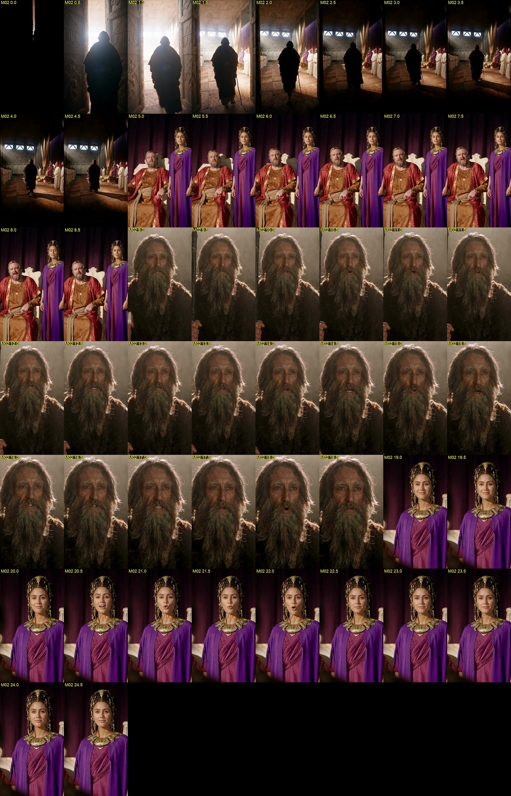
Referencias y prompt
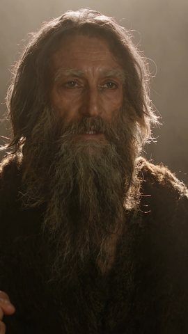
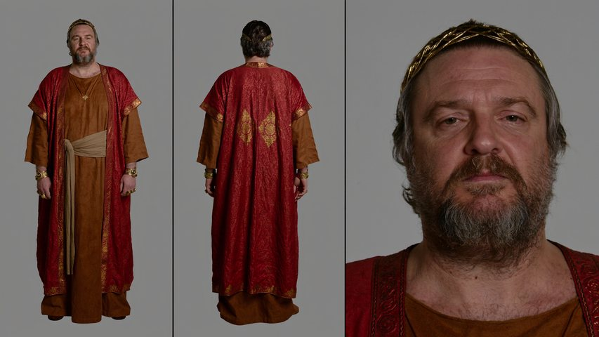
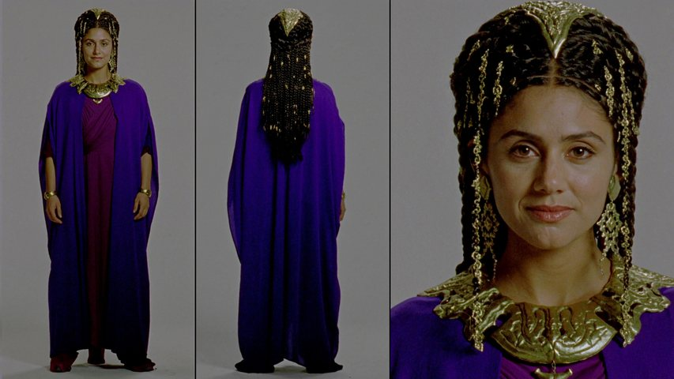
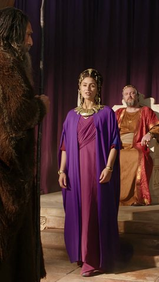
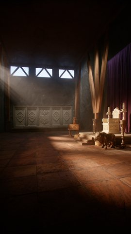
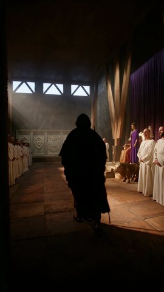
References: @image1 (the first reference image) is Elijah, the prophet: his face, his long dark grey-streaked hair, his long beard, the heavy dark fur mantle with the wide leather belt and his dark knotted wooden staff. @image2 is a real frame of this film: Elijah's face exactly as it must look. @image3 is Ahab, the king. @image4 is Jezebel, the queen in Tyrian purple. @image5 is a real frame of this film: Jezebel standing beside the throne and King Ahab seated on it, exactly as they must look. @image6 is the throne hall. @image7 is a real frame of this film: the throne hall seen from the doors toward the throne, with the white-robed priests along the wall. 9:16 vertical, biblical epic, ancient Israel, 9th century BC, the throne hall of Samaria of @image6 and @image7, day: shafts of sunlight and dust through the high windows, bronze braziers. Naturalistic film look, anamorphic lens, photorealistic, desaturated ochre earth tones, soft film grain. No posing. Nobody ever looks into the camera. The only saturated color is the Tyrian purple of the queen's robes and of the hall's curtains. Geography, the same in every shot: the throne stands on a dais at the far end of the hall. King Ahab sits on the throne; Queen Jezebel stands beside the throne, at its left as we look at it. The great doors are at the opposite end. Priests of Baal in white robes stand along the side walls. Elijah enters by the doors and stops in the middle of the hall, facing the dais. Four shots joined by hard cuts, 25 seconds in total. Shot 1 (0-5s), symmetrical wide shot from the back of the hall, behind Elijah: the great doors swing open, blinding white daylight floods in, and Elijah, backlit, a dark silhouette with his staff, walks in down the middle of the hall toward the throne. At the far end Ahab sits on the throne and Jezebel stands beside it. The priests along the walls react each on his own: one turns his head, one steps back, most stay still. Nobody speaks. Hard cut. Shot 2 (5-9s), medium shot of King Ahab on his throne, with Jezebel standing beside him, exactly as in @image5: Ahab leans forward, irritated, looking down the hall at Elijah, past the camera, and speaks; we clearly see his lips move. Jezebel does not speak; she watches Elijah, perfectly calm. Hard cut. Shot 3 (9-19s), Elijah stands in the middle of the hall. Close-up of his face, exactly the face of @image2, with a very slow push-in. First beat (9-10s): he strikes the stone floor once with his staff; the crack echoes. Second beat (10-19s): he speaks, calm and deep, never shouting; his eyes are fixed on Jezebel, off-screen to the right of the camera, not on the king and never on the lens; we clearly see his lips move with every word. Hard cut. Shot 4 (19-25s), medium close-up of Jezebel standing beside the throne, exactly the woman of @image4 and @image5: a faint icy smile; she answers him slowly, amused, looking down the hall at Elijah, past the camera; we clearly see her lips move. Then she holds his gaze in silence. Dialogue and sound, in American English (natural US accent). In shot 2, Ahab, irritated: "Who let this man in?" In shot 3, Elijah, calm and deep: "As the Lord, the God of Israel, lives, whom I serve, there will be neither dew nor rain in these years, except at my word." In shot 4, Jezebel, amused, a low smooth voice: "Baal is the lord of the rain, prophet." The name Baal is pronounced "BAY-ul": two syllables. Each line is said once, by that person only, in this order; nobody else speaks. Sound effects: the doors creaking open, footsteps on stone, the crack of the staff echoing through the hall, the braziers crackling. No chanting, no choir, no crowd speaking in unison, no music.
M03 Fuego del cielo en el Carmelo
El milagro del capítulo 2 (G4 de la serie): el fuego baja sobre el altar empapado, lo consume y un anciano de la multitud susurra «The Lord… He is God».
- Duración
- 20,2 s · 1080x1920 · 25 cuadros/s
- Costo
- 50,0 créditos (Cinema Studio 1080p: 320)
- Generación
- 11 min
- Planos
- 4 pedidos · 4 obtenidos (cortes en 3,9 s, 7,7 s, 13,8 s)
- Volumen
- -21,3 LUFS (serie: -20,4)
Bien
- Es fuego de verdad: un torrente de llamas que baja del cielo, diez veces más alto que el altar. En la serie había quedado como un rayo de luz.
- El agua de la zanja hierve y sale vapor alrededor del altar, como en el texto.
- Los cuatro planos con los cortes casi en el segundo pedido (3,9, 7,7 y 13,8 s; pedidos a los 4, 8 y 14).
- Nadie habla durante el fuego, y la frase del anciano sale completa a los 16,5 s.
- El primer plano de Elijah iluminado de naranja es el Elijah de la serie.
Mal
- El altar cambia de aspecto: en el plano 3 las piedras se vuelven bloques incandescentes, como panes de lava, y el toro y la leña quedan enteros arriba mientras todo arde.
- La multitud está lejos, en filas, y no reacciona: nadie retrocede ni se tapa la cara (B26).
- El anciano mira al lente todo el plano, y el reflejo del fuego le llena el iris: parecen ojos de fuego.
- El fuego del cielo se corta a los 10 s y queda una fogata sobre el altar.
Segunda mirada
- El plano 2 (el fuego que baja) es lo mejor de la prueba. El plano 3 es espectacular, pero lo ideal sería rehacerlo con la multitud reaccionando y el toro ardiendo.
- Grave: el anciano mira a la lente y los ojos de fuego le dan un tono casi demoníaco. Hay que rehacer ese plano.
- Leve: el chorro de fuego baja primero como una gota blanca de punta redonda (5 s), el agua sigue corriendo sobre las piedras al rojo y la luz cambia de noche a atardecer entre los planos 2 y 3.
- El anciano no es el de la serie (allá era calvo, afeitado y flaco): solo importa si se mezcla con tomas de la serie.
- Contra la serie: mejor en escala y fuego, peor en el anciano.
Diálogo
| Guion | MAGI-2 | Tono | Serie | Tono |
|---|---|---|---|---|
| The Lord... He is God. | 16,5 s – 19,7 s The Lord, he is God. | 120 Hz | 12,0 s – 14,8 s The Lord, he is God. | 219 Hz |
Ver por separado: solo MAGI-2 y solo la serie, cada una con su sonido
Hoja de control: dos cuadros por segundo
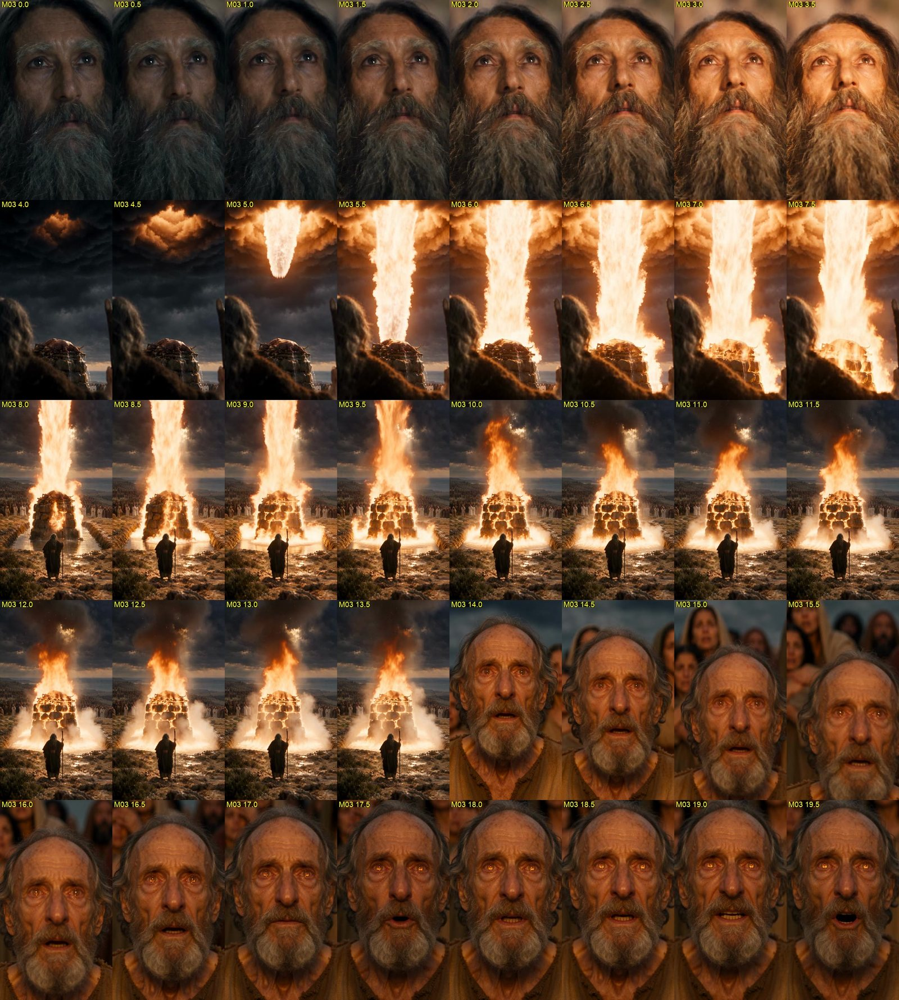
Referencias y prompt
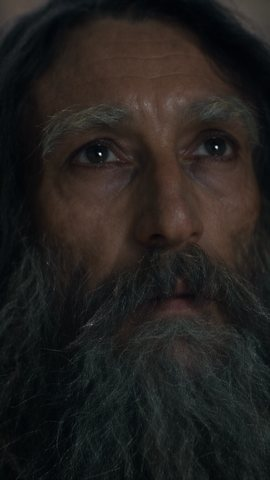
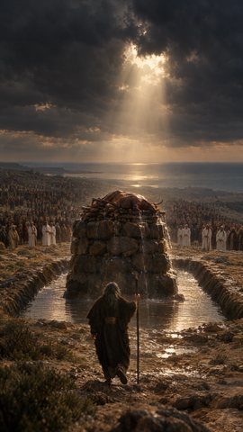
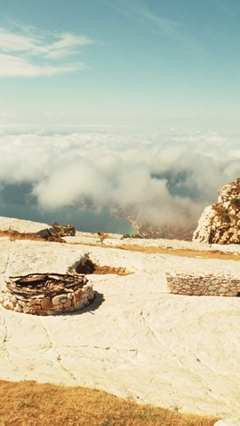
References: @image1 (the first reference image) is Elijah, the prophet: his face, his long dark grey-streaked hair, his long beard and the heavy dark fur mantle. @image2 is a real frame of this film: Elijah's face exactly as it must look. @image3 is a real frame of this film: the summit of Mount Carmel at dusk with Elijah's drenched stone altar, the bull on the stacked wood, the trench full of water around it, the sea on the horizon and the watching crowd of thousands far away. @image4 is the summit of Mount Carmel. 9:16 vertical, biblical epic, ancient Israel, 9th century BC, dusk under a heavy black sky, the summit of Mount Carmel of @image3. Hollywood blockbuster epic, IMAX scale, anamorphic lens, photorealistic, desaturated ochre earth tones, soft film grain, sharp detail. Massive practical-looking fire effects. Nobody ever looks into the camera. No purple anywhere. Geography, the same in every shot: Elijah stands a few steps in front of his altar, always facing it. The crowd is far behind him and around the summit, at a distance. Four shots joined by hard cuts, 20 seconds in total. Shot 1 (0-4s), close-up of Elijah's face, exactly the face of @image2, looking up at the black sky; a fierce orange glow grows above him and floods his face; his eyes widen. Nobody speaks. Hard cut. Shot 2 (4-8s), from behind Elijah, looking past his shoulder at the altar he faces: the black clouds tear open and a roaring torrent of real fire, orange and white flames, pours straight down from heaven onto the altar. Scale: the column of fire is ten times taller than the altar. Hard cut. Shot 3 (8-14s), wide shot of the summit as in @image3: the altar is engulfed in a towering blaze of real flames; the bull, the stacked wood and even the stones burn and crack apart; flames race around the trench and the water boils away in bursts of white steam; black smoke and sparks rise into the night. Elijah stands small and dark in front of the blaze, unmoving. The crowd behaves like real people, never like a synchronized group: nobody moves in unison, nobody does the same gesture at the same moment; some fall back, some shield their faces, a woman pulls a child away, many just stand frozen. Hard cut. Shot 4 (14-20s), close-up of one gaunt old man from the crowd, his face lit orange by the fire, the flames reflected in his wet eyes: he slowly sinks to his knees and whispers; we clearly see his lips move with every word. Behind him, out of focus, other people do different things. Dialogue and sound, in American English (natural US accent): nobody speaks during the first 15 seconds: thunder, the deafening roar of real flames, wood cracking, stones bursting, the hiss of steam, distant screams. Then the old man alone, a hoarse, awed whisper: "The Lord... He is God." The line is said once, by the old man only. No chanting, no choir, no singing, no crowd speaking in unison, no music.
M04 Viento, terremoto y fuego en el Horeb
El capítulo 3 (G4 y G5 de la serie): pasan el viento, el terremoto y el fuego por el monte Horeb; de golpe todo se detiene, Elijah se cubre la cabeza con el manto y susurra «I am the only one left».
- Duración
- 25,0 s · 1080x1920 · 25 cuadros/s
- Costo
- 62,5 créditos (Cinema Studio 1080p: 400)
- Generación
- 17 min
- Planos
- 4 pedidos · 4 obtenidos (cortes en 6,2 s, 10,9 s, 15,8 s)
- Volumen
- -19,6 LUFS (serie: -20,5)
Bien
- Los cuatro planos con los cortes casi en el segundo pedido (6,2, 10,9 y 15,8 s; pedidos a los 6, 11 y 16), uno por fenómeno.
- El paso al silencio funciona: a los 15,8 s se corta el fuego, queda un primer plano en calma con ceniza cayendo, y el sonido cae de golpe como se pidió.
- Elijah se cubre la cabeza con el manto (21 a 22 s) y susurra la frase completa a los 22,6 s, con los ojos cerrados.
- El Elijah del primer plano es el del capítulo 3.
Mal
- Elijah mira directo al lente de 16 a 20,5 s, antes de cerrar los ojos.
- El monte del terremoto parece una cúpula lisa, como un huevo gigante, con la cueva como una ventanita cuadrada: no se lee como una montaña.
- En el viento, Elijah queda chico y casi quieto en la cueva, y las rocas flotan más de lo que vuelan.
- El fuego no barre la ladera: es una franja de llamas delante de la cueva, y Elijah no se tapa los ojos.
- El manto sube solo sobre la cabeza, sin manos (20,7 a 22 s): parece pelo que se vuelve piel.
Segunda mirada
- Grave: Elijah queda congelado todo el plano del viento, con el brazo sobre la cara y el manto casi quieto en medio de un huracán; las rocas son bolas lisas que flotan sin peso.
- Grave: la montaña del terremoto parece una maqueta (un huevo con una ventana cuadrada) y no se reconoce como la misma cueva de los planos 1 y 3.
- Se puede usar el plano del fuego (10,9 a 15,8 s) y el final desde los 22 s, con el manto ya puesto y el susurro.
- Contra la serie: peor. En la serie Elijah se mueve con el viento y el fuego, la montaña es coherente y el manto sube con las manos. MAGI-2 solo gana en la escala del fuego.
Diálogo
| Guion | MAGI-2 | Tono | Serie | Tono |
|---|---|---|---|---|
| I am the only one left. | 22,6 s – 24,4 s I am the only one left. | 101 Hz | 24,3 s – 26,2 s I am the only one left. | - |
Ver por separado: solo MAGI-2 y solo la serie, cada una con su sonido
Hoja de control: dos cuadros por segundo
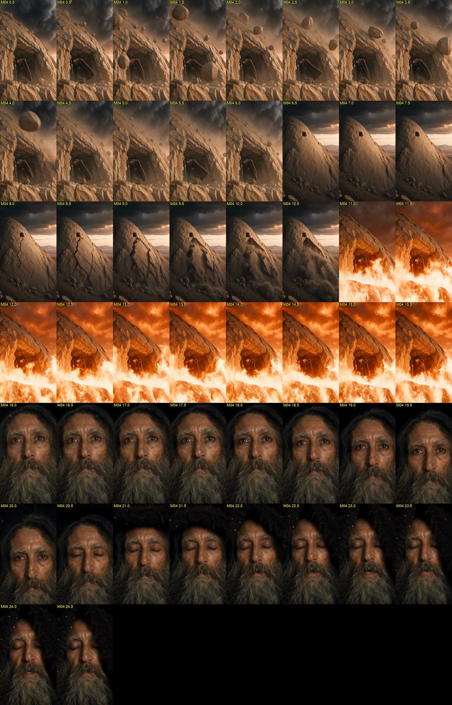
Referencias y prompt
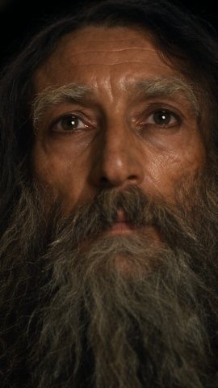
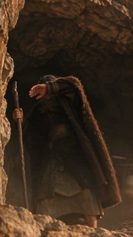
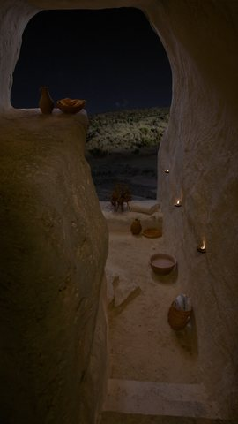
References: @image1 (the first reference image) is Elijah, the prophet: his face, his long dark grey-streaked hair, his long beard and the heavy dark fur mantle. @image2 is a real frame of this film: Elijah's face in the cave mouth, exactly as it must look. @image3 is a real frame of this film: Elijah in the mouth of the cave on Mount Horeb, bracing against the wind. @image4 is the cave on Mount Horeb. 9:16 vertical, biblical epic, ancient Israel, 9th century BC, the bare granite face of Mount Horeb under racing black storm clouds, copper light: Elijah stands in the mouth of a cave high on the mountain. Hollywood blockbuster epic, IMAX scale, anamorphic lens, photorealistic, desaturated ochre earth tones, soft film grain, sharp detail. Massive practical-looking visual effects. Nobody ever looks into the camera. No purple anywhere. Geography, the same in every shot: Elijah always stays in the cave mouth, facing outward toward the valley; the camera is outside the cave. Four shots joined by hard cuts, 25 seconds in total. Shot 1 (0-6s), THE WIND, medium-wide shot of the cave mouth as in @image3: a hurricane wind slams into the mountain; boulders are torn from the slope and fly past, rock faces shatter, walls of dust roar across the frame; Elijah braces himself in the cave mouth, his mantle whipping, one arm over his face. Hard cut. Shot 2 (6-11s), THE EARTHQUAKE, wide shot of the mountain from across the valley: the cave mouth is a small dark opening high on the slope. The whole mountain shudders; a giant fissure splits the slope below the cave and whole cliffs collapse in avalanches of rock and dust. Only the rock moves: the sky and the far peaks stay where they are. Hard cut. Shot 3 (11-16s), THE FIRE, medium-wide shot of the cave mouth: a wall of real fire, orange and white flames, sweeps across the mountainside below and around the cave, a roaring firestorm that lights the clouds orange; its glow fills the cave mouth while Elijah shields his eyes with his arm. Hard cut. Shot 4 (16-25s), close-up of Elijah in the cave mouth, exactly the face of @image2, soot-streaked, eyes wide. First beat (16-19s): suddenly everything stops: no wind, no fire, total silence; grey ash drifts down slowly like snow. Second beat (19-22s): a faint breath of air moves one strand of his hair; he slowly pulls his dark mantle up over his head, closes his eyes and listens. Third beat (22-25s): he whispers, broken; we clearly see his lips move with every word. Sound: shrieking wind and crashing rock in shot 1; a deep grinding earthquake rumble and the roar of avalanches in shot 2; the roar of fire in shot 3; from second 16, abrupt total silence, then only the faintest breath of wind. Dialogue, in American English (natural US accent): nobody speaks until second 22. Then Elijah, a broken whisper: "I am the only one left." The line is said once, by Elijah only. No chanting, no choir, no music.
M05 Elijah y Ahab en la viña
La confrontación del capítulo 4 (T15b, T16 y T17a de la serie): Elijah encuentra a Ahab en la viña de Naboth y le anuncia la sentencia. Es la escena donde, con Cinema Studio, el decorado cambiaba de toma a toma (B29); acá va entera en una sola generación, con dos posiciones de cámara.
- Duración
- 30,2 s · 1080x1920 · 25 cuadros/s
- Costo
- 75,0 créditos (Cinema Studio 1080p: 480)
- Generación
- 17 min
- Planos
- 5 pedidos · 5 obtenidos (cortes en 5,7 s, 10,9 s, 18,8 s, 22,8 s)
- Volumen
- -10,1 LUFS (serie: -21,6)
Bien
- Los cinco planos con los cortes casi en el segundo pedido (5,7, 10,9, 18,8 y 22,8 s; pedidos a los 6, 11, 19 y 23), alternando las dos posiciones de cámara como en un rodaje.
- Cada lado conserva su fondo al volver: detrás de Ahab, el mismo muro claro y la misma viña en los planos 2 y 4; detrás de Elijah, las mismas hileras, la pirca y las colinas en los planos 1, 3 y 5. Es justo lo que fallaba en el capítulo 4 (B29).
- Las tres frases completas, en orden y cada una en su plano. «Naboth» se entiende sin pista.
- Ahab mira a Elijah, fuera de cuadro, nunca al lente; en el plano 4 traga y baja la mirada, como se pidió.
- Elijah va sin manto, con la túnica gris parda, el cinturón y el bastón, y su cara es la de la serie. Ahab es el del capítulo 4.
Mal
- Elijah mira al lente en el plano 5 (23 a 30 s), en plano cercano durante 7 s; en el plano 3 la mirada queda casi en el eje, apenas corrida hacia Ahab.
- En el plano 4 (18,8 a 22,4 s) el sonido cae a silencio digital (-62 a -65 dB): el viento desaparece. Hay que reponer el ambiente debajo (B23).
- Elijah tiene una marca oscura bajo el ojo, como una cicatriz, que no está en la serie.
- Suena 11 dB más fuerte que la serie (-10,1 LUFS contra -21,6). El «Thank you.» de los 30 s es el transcriptor inventando sobre la cola del trueno (C2).
Segunda mirada
- Los fondos de cada posición de cámara se repiten: el muro, la ventana y la viña detrás de Ahab son idénticos en los planos 2 y 4; detrás de Elijah no aparece nada nuevo al acercar la cámara.
- Grave según la regla de la serie: Elijah mira al lente en el plano 5. Hay que rehacerlo o aceptarlo sabiendo que rompe la regla.
- Se pueden usar los planos 1, 2 y 4 (este último con ambiente repuesto); el 3, con reservas por la mirada.
- Leve: Elijah se detiene a unos 2 m de Ahab y no a un brazo, y Ahab baja la cabeza además de la mirada.
- Contra la serie: parecida, algo mejor. Es un plano y contraplano de verdad, el silencio de Ahab está bien actuado y hay viento en el plano final; es peor por la marca en la cara, el hueco de sonido y el volumen.
Diálogo
| Guion | MAGI-2 | Tono | Serie | Tono |
|---|---|---|---|---|
| So you have found me, my enemy. | 8,6 s – 10,4 s So you have found me, my enemy. | 98 Hz | 4,2 s – 6,0 s So you have found me, my enemy. | - |
| I have found you. Have you murdered a man, and taken his land as well? | 11,9 s – 18,4 s I have found you. Have you murdered a man and taken his land as well? | 113 Hz | 23,5 s – 26,7 s Have you murdered a man and taken his land as well? · 85 % | 111 Hz |
| Where dogs licked up Naboth's blood, dogs will lick up your blood. | 23,3 s – 28,9 s Where dogs licked up Naboth's blood, dogs will lick up your blood. | 94 Hz | 30,7 s – 36,7 s In the place where dogs licked up Nabrit's blood, dogs will lick up your blood. · 88 % | 111 Hz |
Además se transcribió:
- 30,0 s – 30,1 s: «Thank you.»
Ver por separado: solo MAGI-2 y solo la serie, cada una con su sonido
Hoja de control: dos cuadros por segundo
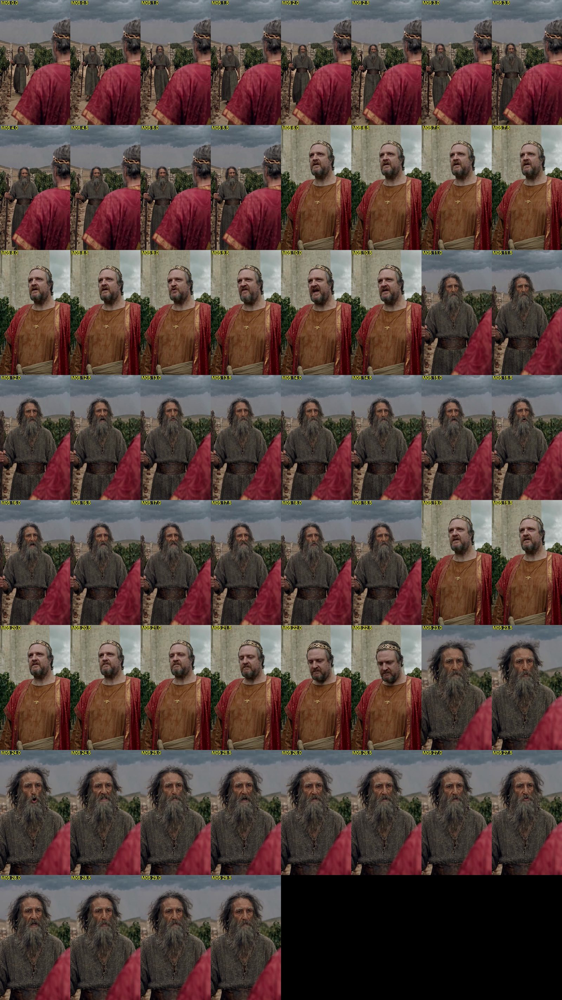
Referencias y prompt
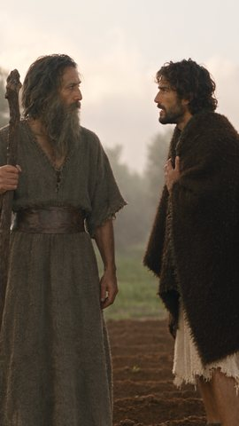
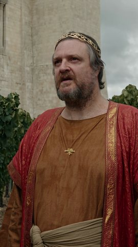
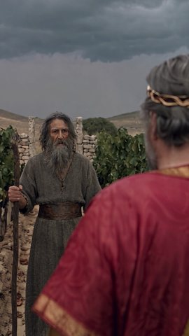
References: @image1 (the first reference image) is Elijah, the prophet: this is his face, his long dark tangled hair and his long grey-brown beard. @image2 shows Elijah as he is dressed now: without the fur mantle, in a grey-brown wool tunic with a frayed V-shaped collar and a wide leather belt, with his dark knotted wooden staff (the young man next to him is not in this scene). @image3 is Ahab, the king: about 50, heavyset, greying hair and a trimmed greying beard, a thin twisted gold circlet, an ochre robe with a cream sash and a long crimson mantle with gold embroidered borders. @image4 is a real frame of this film and the exact camera position of every shot of Ahab: Ahab from the chest up, the vines at the left and the pale palace wall behind him. @image5 is a real frame of this film and the exact camera position of every shot of Elijah: the earth path between two tall rows of grapevines, seen over King Ahab's right shoulder, with Elijah standing in front of him and the low stone wall and the hills behind Elijah. 9:16 vertical, biblical epic, ancient Israel, 9th century BC, late afternoon: dark slate-grey storm clouds cover the whole sky, dim flat light, wind, no rain. Naturalistic film look, natural light only, low contrast, anamorphic lens, photorealistic, desaturated ochre earth tones, soft film grain. No glow effects, no oversaturated colors, no posing. Nobody ever looks into the camera. The vines are in full summer leaf. No purple anywhere. Geography, the same in every shot: the two men face each other on the earth path between the two rows of vines. Behind Ahab rises the pale palace wall. Behind Elijah the path runs away to the low stone wall and the bare hills. Nothing new ever appears: no other people, no other building, no tower. The vines, the wall and the light stay exactly the same in every shot. Wardrobe: Elijah does NOT wear the dark fur mantle of @image1; he wears only what he wears in @image2 and carries his staff in his right hand. Ahab's circlet, hair and crimson mantle never change. Five shots joined by hard cuts, 30 seconds in total. This is one conversation filmed from two camera positions only: the position of @image5 for Elijah and the position of @image4 for Ahab. Shot 1 (0-6s), the camera position of @image5, behind King Ahab's right shoulder; Ahab stands in the right foreground with his back to us and we never see his face in this angle. Elijah walks down the path between the vines toward him, unhurried, and stops one arm's length in front of him. Nobody speaks. Hard cut. Shot 2 (6-11s), the camera position of @image4: medium close-up of King Ahab from the chest up, the pale palace wall behind him. He stares at Elijah, who is off-screen just to the left of the camera, startled and bitter, and speaks to him without raising his voice; we clearly see his lips move. Hard cut. Shot 3 (11-19s), the camera position of @image5 again, a little closer: Elijah from the waist up over Ahab's shoulder, the edge of Ahab's crimson mantle out of focus at the right edge of the picture. Elijah speaks to the king, calmly and severely, his eyes on Ahab's face, never on the lens; we clearly see his lips move with every word. Hard cut. Shot 4 (19-23s), the camera position of @image4 again: Ahab says nothing. His confidence drains away: he swallows, his mouth tightens, and he lowers his eyes to the ground without bowing his head. Hard cut. Shot 5 (23-30s), the camera position of @image5, closer still: Elijah from the chest up, the edge of Ahab's crimson shoulder out of focus at the right edge. He speaks slowly, without shouting, like a judge passing sentence; we clearly see his lips move with every word. The wind moves his hair and beard. Dialogue and sound, in American English (natural US accent). In shot 2, Ahab, low, bitter, shaken: "So you have found me, my enemy." In shot 3, Elijah, a deep, steady, grave voice, never shouting: "I have found you. Have you murdered a man, and taken his land as well?" In shot 5, Elijah, the same voice, slower: "Where dogs licked up Naboth's blood, dogs will lick up your blood." The name Naboth is pronounced "NAY-both". Each line is said once, by that man only, in this order; nobody else speaks. Sound effects: wind in the vine leaves, Elijah's footsteps on dry earth, one low roll of thunder at the end. No chanting, no choir, no music.
M06 Jezebel en la ventana
El final del capítulo 6 (T15, T16 y T17 de la serie): Jehu llega bajo la ventana, Jezebel lo provoca desde arriba, él pide quién está de su lado, dos sirvientes la toman de los brazos y él ordena «Throw her down».
- Duración
- 30,2 s · 1080x1920 · 25 cuadros/s
- Costo
- 75,0 créditos (Cinema Studio 1080p: 480)
- Generación
- 12 min
- Planos
- 5 pedidos · 5 obtenidos (cortes en 5,8 s, 12,8 s, 18,8 s, 25,0 s)
- Volumen
- -10,3 LUFS (serie: -26,6)
Bien
- Los cinco planos con los cortes casi en el segundo pedido (5,8, 12,8, 18,8 y 25 s; pedidos a los 6, 13, 19 y 25), y cada plano repite el encuadre del cuadro de la serie que se le dio: la ventana desde abajo, la reina desde afuera y Jehu desde arriba.
- La misma ventana, la misma cortina y la misma luz de mediodía cada vez que vuelve a un ángulo: el decorado no cambia entre planos de un mismo lado.
- Las cuatro frases completas y en orden. «Jehu» bien dicho: se transcribe igual con pista y sin pista (C8).
- Los dos sirvientes salen como se pidió: un viejo pesado y calvo de túnica crema y un joven flaco de túnica gris, cada uno a su ritmo, y la toman de los brazos.
- Jezebel y Jehu son los del capítulo 6, y el púrpura queda solo en la reina y la cortina.
Mal
- Jehu mira directo al lente en sus dos planos desde arriba (13 a 19 y 25 a 30 s).
- El sirviente viejo desaparece detrás del hombro derecho de la reina y reaparece del otro lado (20,4 s), sin cruzar.
- Detrás de Jehu no están las viñas de la referencia, y desde arriba desaparecen los caballos que en el plano 1 estaban delante del carro.
- El carro se ve distinto según el ángulo: una plataforma con dos ruedas grandes desde atrás y una tina redonda desde arriba.
- Suena 16 dB más fuerte que la serie (-10,3 LUFS contra -26,6).
Segunda mirada
- Grave: Jehu mira al lente en todo el plano 3 y todo el plano 5, que además parecen la misma toma repetida con él posando quieto.
- Grave: el salto del sirviente viejo de un lado al otro de la reina a los 20,4 s.
- Leve: la reina aparece en la ventana subiendo desde abajo del alféizar, y Jehu queda inmóvil, sin que se le mueva la capa, varios segundos antes de hablar.
- Se puede usar el plano 1, el plano 2 entero y el plano 4 desde los 20,6 s.
- Contra la serie: parecida. La ventana sale mejor (plano más cercano, se leen los labios, la reacción de la reina es más natural); los planos de Jehu salen peor.
Diálogo
| Guion | MAGI-2 | Tono | Serie | Tono |
|---|---|---|---|---|
| Have you come in peace, Jehu? Murderer of your king. | 7,9 s – 12,1 s Have you come in peace, Jehu? Murderer of your king. | 188 Hz | 9,0 s – 13,0 s Have you come in peace, Jehu? Murderer of your king. | 167 Hz |
| Who is on my side? Who? | 15,2 s – 18,0 s Who is on my side? Who? | 271 Hz | 24,3 s – 26,7 s Who is on my side? Who? | 308 Hz |
| Throw her down. | 28,4 s – 29,7 s Throw her down. | 222 Hz | 29,5 s – 30,7 s Throw her down! | 356 Hz |
Además se transcribió:
- 17,3 s – 18,0 s: «Who?»
- 30,0 s – 30,0 s: «»
Ver por separado: solo MAGI-2 y solo la serie, cada una con su sonido
Hoja de control: dos cuadros por segundo
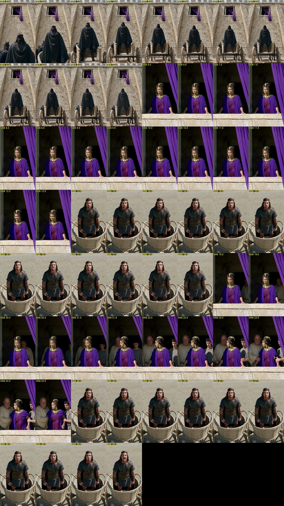
Referencias y prompt
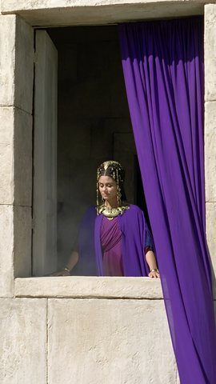
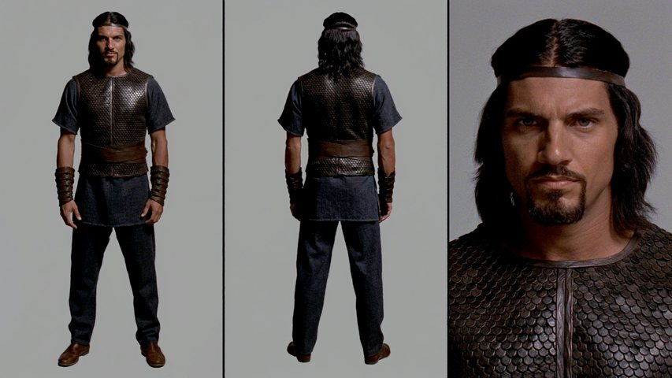
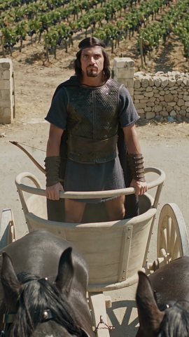
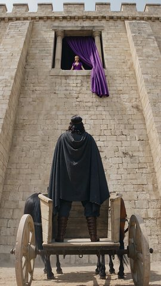
References: @image1 (the first reference image) is Jezebel, the queen: her face, her kohl-lined almond eyes, her black braided hair threaded with gold, her robes of Tyrian purple and her heavy gold collar. @image2 is a real frame of this film and the exact camera position of every shot of Jezebel: the tall stone window of the palace seen from outside, with the purple curtain at its right edge, the dim room behind and the queen in it. @image3 is Jehu, the commander: his face, his shoulder-length black hair with a leather headband, his short pointed black beard and his dark bronze scale cuirass. @image4 is a real frame of this film and the exact camera position of every shot of Jehu: Jehu standing in his light open two-wheeled chariot, seen steeply from above, from the window, with the green rows of vines and the low dry-stone wall behind him. @image5 is a real frame of this film: the high pale limestone wall of the palace of Jezreel seen from its foot, with the window high up, its purple curtain, and Jehu in his chariot seen from behind. 9:16 vertical, biblical epic, ancient Israel, 9th century BC, hard white midday sun. Naturalistic film look, natural light only, low contrast, anamorphic lens, photorealistic, desaturated ochre earth tones, soft film grain. No glow effects, no oversaturated colors, no posing. Nobody ever looks into the camera. The only saturated color is purple: the window curtain and the queen's robes. Geography, the same in every shot: Jezebel stands in the high window of the palace wall, looking down. Jehu stands in his chariot on the bare ground at the foot of the wall, looking up at her. They are far apart: she is high above, he is far below. Wardrobe: Jehu wears a dark grey-blue wool tunic that ends at his knees under a dark bronze scale cuirass, leather arm guards and a long dusty black wool cloak; his legs are bare and he wears laced leather sandals: no trousers, no boots. A bow and a quiver hang on his back. His chariot is the light open two-wheeled chariot of pale wood of @image4 and @image5, pulled by two dark horses: no bench, no seat, no roof, no four wheels. Jezebel wears a thin gold diadem on her braided hair; her eyes are freshly lined with black kohl. Five shots joined by hard cuts, 30 seconds in total. Shot 1 (0-6s), the camera position of @image5, low angle at the foot of the wall, looking up: Jehu's chariot rolls in from the bottom edge and stops; Jehu, with his back to us, tilts his head back to look up at the window. High above, in the window, the queen appears, small and far away, and puts both hands on the stone sill. Nobody speaks. Hard cut. Shot 2 (6-13s), the camera position of @image2: Jezebel in the window, medium shot from outside, both hands on the sill, looking down and to the left of the camera at Jehu far below. Behind her the room is dark and empty. She speaks down to him, coldly and slowly, with contempt, never raising her voice; we clearly see her lips move with every word. Then a faint cold smile. Hard cut. Shot 3 (13-19s), the camera position of @image4, looking steeply down from the window: Jehu in his chariot, facing us, his head tilted back, looking up past the camera. He shouts up, past the queen, to whoever stands behind her; we clearly see his lips move with every word. He never looks into the camera. Hard cut. Shot 4 (19-25s), the camera position of @image2 again: two palace servants come out of the darkness of the room behind her, each at his own pace: an old heavy man with a shaved head in a plain cream linen tunic with long sleeves, and a thin young man with short black hair in a plain grey tunic. They stop close behind her, one at each shoulder. She turns her head toward the old one; her smile disappears and her eyes widen; each of them takes hold of one of her arms. Nobody speaks. Hard cut. Shot 5 (25-30s), the camera position of @image4 again: Jehu in his chariot, looking up past the camera at the window, gives the order, loud and flat; we clearly see his lips move. Dialogue and sound, in American English (natural US accent). In shot 2, Jezebel, a low, cold, smooth woman's voice, never raised: "Have you come in peace, Jehu? Murderer of your king." In shot 3, Jehu, a hard voice, shouting upward: "Who is on my side? Who?" In shot 5, Jehu, loud and flat: "Throw her down." The name Jehu is pronounced "JEE-hoo": two clear syllables, ending in a long "oo" vowel. Each line is said once, by that person only, in this order; the servants never speak. Sound effects: wheels and hooves stopping, a horse blowing, wind against the wall, the curtain moving, footsteps on a stone floor. No chanting, no choir, no music.